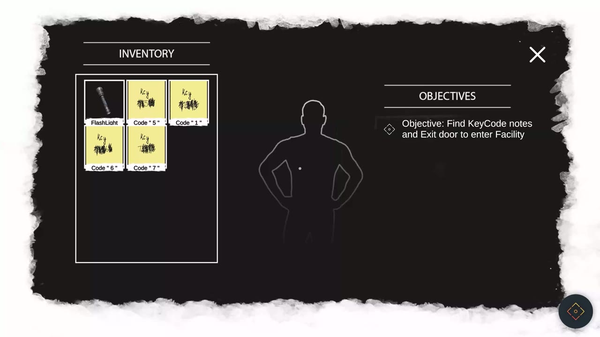
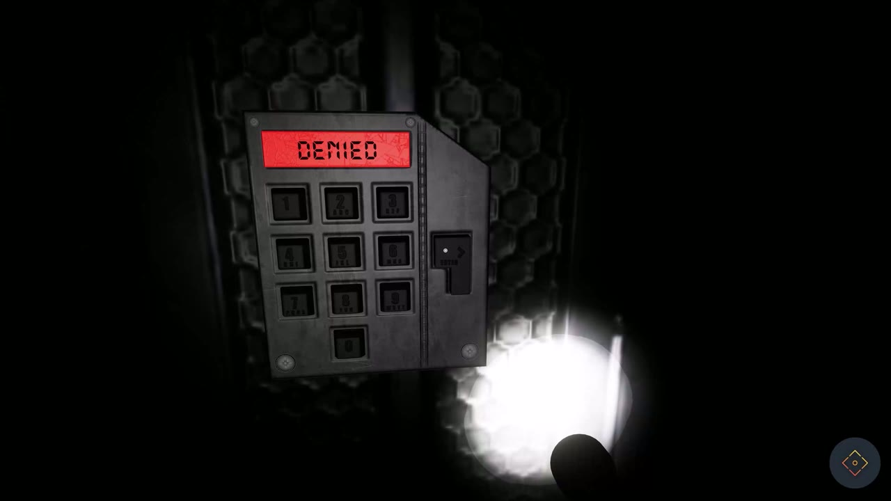
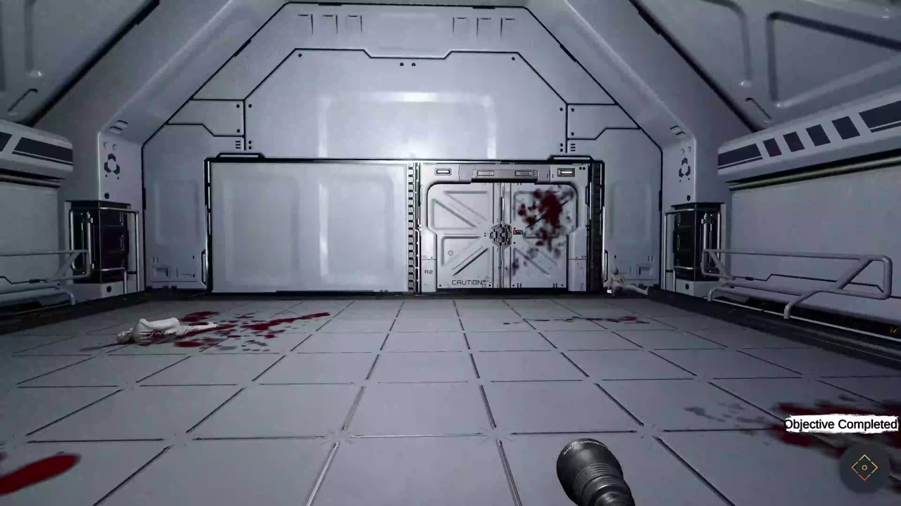
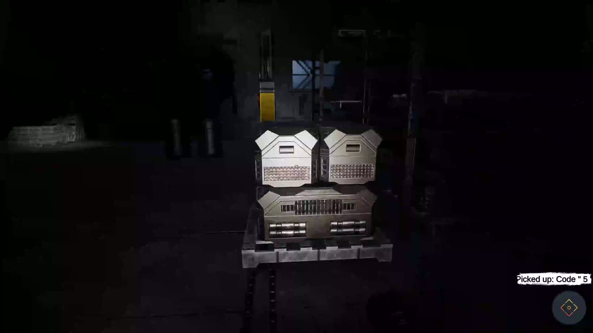

Facility Zero
A research facility with no lights, no map, and a door that only opens if you find the numbers somebody else wrote down before it went wrong.
Headphones recommended. The silence is doing a job.
01The idea
I wanted the fear in Facility Zero to come from not being sure you'd understood something — not from a monster jumping out of a cupboard. That meant building a game that hands you a flashlight, a handful of notes and a locked door, and then gets out of the way.
Every room answers a question you didn't know you were asking. The notes only make sense once you've seen the door. The door only makes sense once you've been in the room it opens onto. You're always slightly behind, which is exactly the feeling I was chasing.
02What's actually in the build
- A flashlight that is genuinely the only light in most rooms — falloff tuned so the floor is always readable even when the room isn't.
- A pickup system for code notes: you walk up, take it, and it lands in your inventory with a confirmation, so nothing important lives in a toast you missed.
- An inventory that doubles as the objective tracker — what you're carrying, and a line telling you what you're actually here to do.
- Keypad doors that answer immediately: accepted, or a flat DENIED. A wrong code is information, not two minutes of standing still.
- A facility that alternates between pitch-black service corridors and rooms so clean they feel wrong — the contrast does more work than any jump scare could.
- A weapon that appears once the game stops being a puzzle and starts being something else.
03What broke first
Dark games break in dark ways. Three of mine:
- "Dark" that was unplayable. Tuned on a good monitor, it was moody; on a cheap laptop panel it was a black rectangle. Raising the ambient floor and giving the flashlight a wider, softer cone kept the mood and saved the game.
- Notes you could walk past. My first pickups were silent and subtle — great atmosphere, terrible design. A confirmation line and a persistent inventory meant nobody had to remember whether they'd grabbed something.
- Puzzle dead ends. With the wrong code, the panel used to do nothing, and players assumed the game had broken. Making it refuse loudly turned confusion into a nudge.
A puzzle should never leave a player wondering whether the game is broken. Say no clearly, and let them get back to thinking.
04What I'd do next
- Build the audio properly — this is a sound-first game and right now sound is the weakest part of it.
- Two or three routes through the facility, so a second playthrough isn't a memory test.
- Checkpoints. Dying shouldn't mean re-reading every note you already understood.
- Give the weapon a reason to exist, or take it out. Right now it's tension; it should be a mechanic.
05Frames



